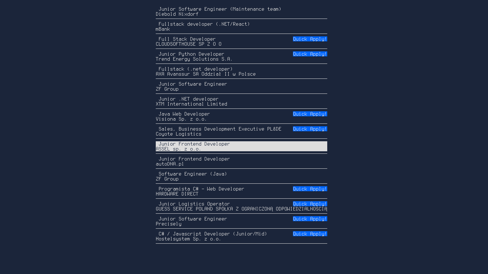
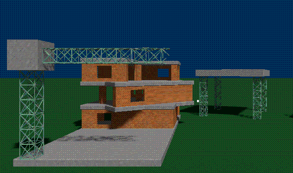

Intro
My name is Felix Lipski. I'm a programmer from Poland. I specialize in functional programming.
My name is Felix Lipski. I'm a programmer from Poland. I specialize in functional programming.
Professionally, I do React, TypeScript and Scala. Here's my Resume/CV:
Jan Lipski CV
I like functional programming, but I especially like the ML-like languages, such as Nix and OCaml.
This is my github:
github:felix-lipski
This is a TUI interface I've build for myself to speed up my job applying process.
It uses Python + Selenium + Chromium + Blessed
github:felix-lipski/apply-studio
I work on a music generation algorithm. Right now melody and rhythm generation are pretty solid. Chord selection / harmonic composition is hacked on, but it works. Timbre generation is the current focus of development.
Here's an example loop created by the melody generation module, played on the Serum synth (I did not make the synth).
This project has been rewritten at least 7 times, allowing me to learn new languages and technologies each time. These being: Python, JavaScript, Lua, C, Haskell, Julia, Rust, Ocaml, Prolog and Scheme.
For this project, I'd like to keep the most important parts closed source for now, but here are some less significant parts:
github:felix-lipski/bmt-sink
_________________________________________________________
| |█| |█| | |█| |█| |█| | |█| |█| | |█| |█| |█| |
| |█| |█| | |█| |█| |█| | |█| |█| | |█| |█| |█| |
| |█| |█| | |█| |█| |█| | |█| |█| | |█| |█| |█| |
| |█| |█| | |█| |█| |█| | |█| |█| | |█| |█| |█| |
| | | | | | | | | | | | | | |
| | | | | | | | | | | | | | |
|___|___|___|___|___|___|___|___|___|___|___|___|___|___|
I also (used to) make songs the normal way. Here are my two favorites.
I also "work" on a game/simulation, but really, I've just been messing around with the graphics part for years. Im trying to achieve an original stylized look, loosely based on this video.
LinkedIn:
Jan Lipski
Email:
jan.kazimierz.lipski@gmail.com
Some websites I enjoy:
Existential TypeNot RelatedMark TarverBartosz MilewskiRyszard Paweł KosteckiLinas Vepstas